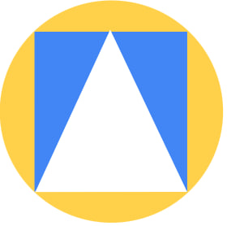
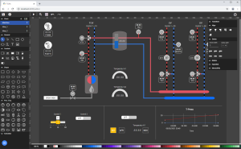

В данном руководстве рассматривается процесс развертывания и настройки веб-ориентированной системы визуализации FUXA для работы с оборудованием Wiren Board через протокол MQTT.
О SCADA FUXA


SCADA FUXA - это современная веб-ориентированная SCADA/HMI-платформа для автоматизации, визуализации процессов и Интернета вещей (IoT).
В зависимости от задач можно установить сервер FUXA непосредственно на контроллер Wiren Board или развернуть его на внешнем ПК/сервере, подключаясь к контроллерам удалённо.
Основной способ обмена данными с контроллерами Wiren Board — встроенный MQTT-брокер. Помимо MQTT, FUXA поддерживает протоколы Modbus RTU/TCP, OPC UA, BACnet, Siemens S7, а также работу с базами данных (SQLite, InfluxDB и др.).
Основные плюсы данной системы по отношению к другим SCADA:
- интеграция со многими протоколами, включая MQTT, для работы с контроллерами Wiren Board;
- открытые исходники;
- бесплатная;
- удобство работы: Создание дашбордов, настройка логики и управление интерфейсом происходят прямо в браузере (не нужно устанавливать тяжелые десктопные редакторы).
Процесс ознакомления с FUXA состоит из следующих шагов:
- Установим FUXA на контроллер.
- Выполним первоначальную настройку среды и подключимся к локальному MQTT-брокеру.
- Научимся добавлять теги и подписываться на топики.
- Создадим первую интерактивную панель управления (выведем температуру CPU и настроим кнопку управления зуммером).
Установка с помощью Docker
Установочный пакет FUXA по умолчанию не идёт в комплекте с контроллером Wiren Board.
Лучше всего использовать Docker для установки с изоляцией сервисов.
Для этого предварительно нужно установить Docker на контроллер — об этом можно прочесть тут:
Далее одной командой установить и запустить FUXA на 1881 порту:
# docker run -d -p 1881:1881 frangoteam/fuxa:latest
После этого решение уже будет запущено и готово к работе - можно переходить к этапу «Запуск конфигуратора и настройка».
Запуск конфигуратора и настройка
После того как вы завершили установку, нужно зайти в конфигуратор для дальнейшего создания панели управления.
Вход в интерфейс
Для настройки системы откройте браузер и введите IP-адрес вашего контроллера с портом 1881:
Переход в режим Editor
По умолчанию открывается режим просмотра. Чтобы начать создание проекта:
- В левом нижнем углу нажмите на иконку Три полоски (главное меню).
- В открывшемся списке выберите пункт Editor.
- Далее появится внешний вид редактора, где нужно найти кнопку конфига в виде шестеренки:
-
Вход в режим Editor
-
Внешний вид Editor (кнопка шестеренки)


Создание источника данных (подключение брокера MQTT)
Для взаимодействия FUXA с устройствами Wiren Board необходимо добавить подключение к MQTT-брокеру контроллера.
- В открывшемся окне настроек выбрать Connections.
- Нажмите кнопку «+» в нижней части экрана для добавления нового соединения.
- Среди доступных подключений выбрать Mqtt клиент.
-
Список доступных соединений

Укажите параметры подключения:
| Параметр | Значение |
|---|---|
| Name | Произвольное имя (например, MQTT WirenBoard) |
| Type | MQTTclient |
| Enabled | Включить (переключатель в положение ON) |
| Address (mqtt://[server]:[port]) | mqtt://127.0.0.1:1883 (если FUXA на контроллере) |
Нажмите OK. Если всё настроено верно, рядом с названием появится зеленый индикатор.
Добавление тегов (подписка на топики MQTT)
Для получения данных от датчиков необходимо настроить теги, привязанные к MQTT-топикам Wiren Board.
Нажмите на иконку «прикрепить» (скрепка/карандаш) рядом с созданным соединением.
-
Кнопка Tag - "Скрепка"
-
Кнопка Search


Нажмите «+» для добавления тега.
Тег для подписки на топик
Настройка топика: Для указания топика вы можете:
- ввести путь к топику вручную в формате /devices/ID/controls/CONTROL;
- или воспользоваться функцией поиска: нажмите на иконку «лупа» (Search topics on broker) и выберите нужный параметр из списка найденных топиков.
В поле Name оставьте введенный автоматически полный путь до топика или введите понятное название (например, Hall_Temp или Buzzer_enable) - данное имя будет использоваться далее только в рамках FUXA.
Далее важно нажать Subscribe, чтобы данный топик сохранился.
Тег для публикации в топик
Для того чтобы публиковать в топик, нужно создать запись другого типа, выбрав "Publish", используя /on топики, например /devices/buzzer/controls/enabled/on.
-
Tag для записи

Далее при желании использовать toggle обязательно нужно указывать маску; например, для /devices/buzzer/controls/enabled/on нужно указать маску 0-го бита.
Создание SCADA-панели
Теперь, когда у нас есть настроенные теги, перейдите на центральный холст редактора для создания визуального интерфейса.
Шаг 1: Добавление индикатора температуры CPU
Выведем на панель текущую температуру процессора контроллера:
- В левой панели (библиотека компонентов) выберите виджет Circular Gauge (круглый датчик) и добавьте его на холст. Обратите внимание, что перетаскивание может не работать.
- Выделите добавленный компонент, кликнув по нему мышкой.
- В правой панели перейдите в свойства (Property) и найдите раздел Variable/Tag.
- Выберите из списка ранее созданный MQTT-тег, отвечающий за температуру (например, подписанный на топик
/devices/hwmon/controls/CPU Temperature). - При необходимости там же в свойствах настройте минимальное и максимальное значения шкалы (например, Min: 0, Max: 100).
Шаг 2: Добавление переключателя для зуммера (Buzzer)
Теперь добавим элемент для управления встроенным зуммером контроллера:
- Из библиотеки компонентов выберите виджет Switch (переключатель) и перетащите его на холст.
- Выделите переключатель и откройте его свойства.
- В разделе Variable/Tag выберите тег, который вы создали для публикации (топик
/devices/buzzer/controls/enabled/on). - Найдите в свойствах компонента параметр Bitmask и обязательно установите его в значение 0. Это позволит переключателю корректно отправлять бинарные команды (1 и 0) в топик.
-
Настройка события click

Запуск и тестирование
Для проверки работы нажмите на иконку «треугольник» (Launch) в верхней панели редактора. Система перейдет в режим исполнения. Проверьте, что индикаторы отображают реальные данные, а кнопки управляют устройствами. Для постоянной работы используйте вкладку Home.
Навигация и прямые ссылки
Открытие страницы по URL
Вы можете настроить автоматическое открытие конкретной страницы (View) через адресную строку:
Обратите внимание: стандартное название страницы (MainView) не работает в ссылках. Рекомендуется переименовать страницу в редакторе на простое имя (например, NewPage).
Дополнительные настройки интерфейса
Кнопки на боковой и верхней панелях
Глобальная навигация настраивается в разделе макета:
Зайдите в Edit Project -> Layout. Вкладка Navigation Side Menu: здесь добавляются кнопки, выбираются иконки и привязываются целевые страницы (View). Для стационарных экранов установите Side Mode в значение Fixed, чтобы меню не скрывалось. Вкладка Header Navigation Bar: здесь настраивается отображение уведомлений об авариях (Alarms).
Кнопки на странице
Для переходов внутри интерфейса можно использовать обычные кнопки из библиотеки компонентов:
В свойствах кнопки выберите событие (Event) -> Click -> Open Page.
Оптимизация для планшетов
Чтобы интерфейс выглядел органично на настенном планшете, используйте функцию браузера «Добавить на главный экран» или специализированное ПО.
Fully Kiosk Browser (Android)
Рекомендуемое приложение для создания профессиональных панелей управления:
Start URL: Укажите прямую ссылку на вашу главную страницу FUXA.
Kiosk Mode: Активируйте для блокировки системных кнопок планшета.
Motion Detection: Настройте включение экрана по камере при приближении человека.
Полезные ссылки
Ссылка на официальный репозиторий разработчиков ПО.
Ссылка на официальный сайт разработчиков ПО.